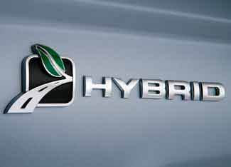

Detroit's "Big Three" automakers came to Washington, D.C., to present their long-term viability plans to Congress, and those plans included significant commitments to fuel-saving and electric vehicle technologies.
The automakers are seeking federal loans to help maintain their financial viability through the current economic crisis. Ford unveiled an aggressive plan to electrify its fleet of vehicles, including plans to offer an all-electric van-type vehicle in 2010 for use in commercial fleets, complemented by a battery-powered sedan in 2011. By 2012, the company will bring a family of hybrids, plug-in hybrids, and battery electric vehicles to market. Ford intends to invest about $14 billion on fuel-efficient technologies over the next seven years and aims to achieve a 36 percent improvement in fuel economy for its entire fleet by the 2015 model year. The company has applied to DOE's Advanced Technology Vehicles Manufacturing Loan Program for $5 billion to support these efforts, but the company is also asking for access to up to $9 billion in bridge loans. However, Ford expects to remain viable through 2009 and hopes to avoid drawing on the loan. Ford's complete business plan is available online.
Of course, General Motors is involved in a well-publicized effort to launch its plug-in hybrid model, the Chevy Volt, in 2010, and the company also intends to employ the Volt drivetrain in other vehicles. GM plans to launch predominately fuel-efficient cars and crossovers over the next four years, investing $2.9 billion in fuel-efficient technologies and alternative fuels during that time period. By 2012, GM will offer 15 hybrid models, and more than half of its fleet will be flex-fuel vehicles, able to run on either gasoline or ethanol-rich E85. GM is seeking $12 billion in bridge loans through 2009 and is also asking for revolving credit of $6 billion that it could draw on if its sales forecast falls short. The company ended the third quarter of the year with cash reserves of $16 billion, but it estimates that it should have at least $11 billion on hand to maintain its operations. Without a federal loan, GM expects its cash reserves to fall to $10.1 billion by year's end and to fall to $3.6 billion by February.
Chrysler's long-term viability plan is also available online.
|
 FORD MOTOR CO. Gasoline-electric hybrids and all-electric cars wil be a key part of automakers' future strategies. At least, for those that survive the economic recession. |
|
|